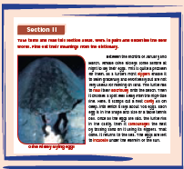
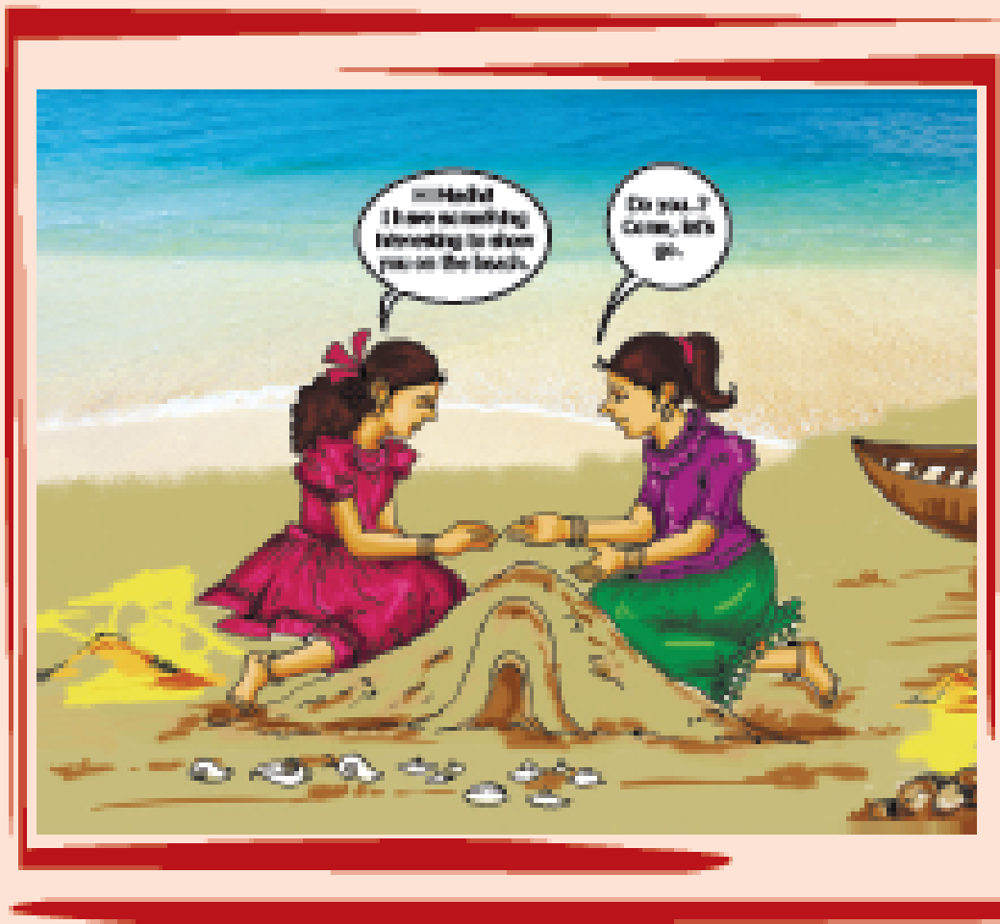
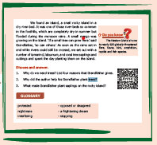
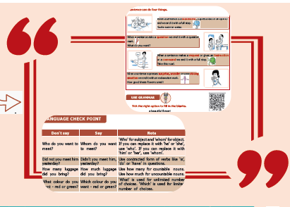
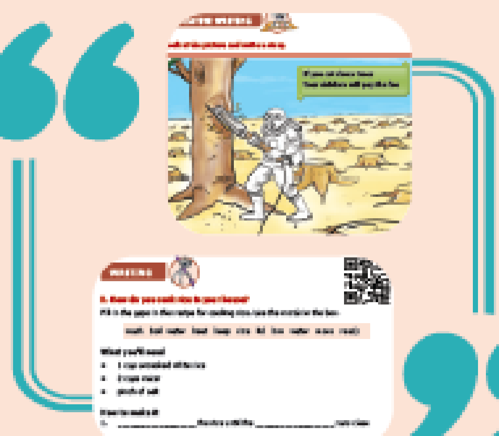
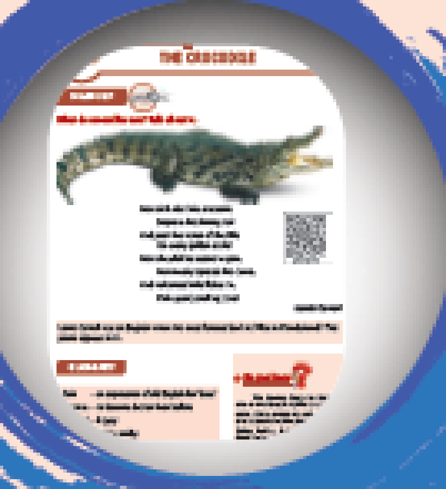
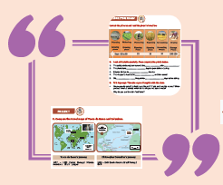
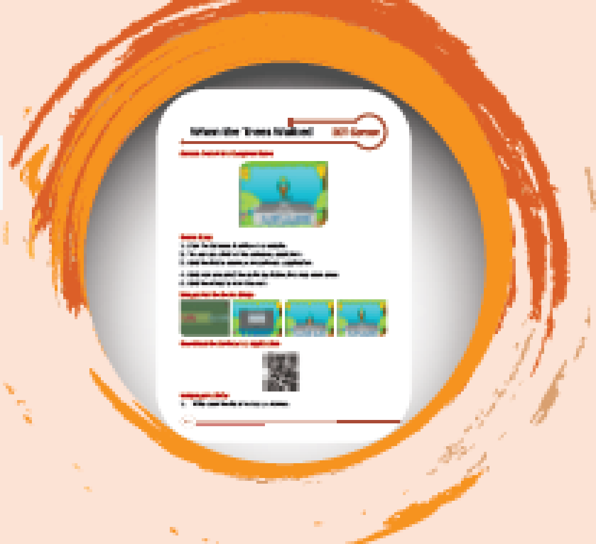

Take turns and read this section aloud. Work in pairs and underline the new words. Find out their meanings from the dictionary.
The description of the picture is begins

The picture of Olive Ridley laying eggs is given
The description of the picture is ends
The description of the picture is begins

The picture shows, the two girls Ayisha and Madhi are building sand house in the beach.
The description of the picture is ends
The description of the picture is begins

The picture shows the titles of Do you Know?, Discuss and answer and Glossary.
The description of the picture is ends
The description of the picture is begins

The pictures have the following content.
The illustrations in Picto Grammar will enable understanding of grammar terms in a fun and easy way.
The description of the picture is ends
Digital Grammar Games can be used to reinforce learning and encourage students to learn by doing. Language Check Point can highlight points of usage to avoid the common mistakes.
The description of the picture is begins

The pictures have the following content.
Students can be taken through all the steps of writing with the help of pictures and prompts.
Creative writing can be used to bring out their writing skill.
Students can be encouraged to present or display their writings in the class.
Look at the picture and write a story.
The description of the picture is ends
What do crocodiles eat? Talk about it.
The description of the picture is begins

The pictures have the following contents.
The warm up picture at the beginning of the section can be used to discuss the theme of the poem.
The Focus should be on the enjoyment of the poem through exploring imagery and rhythm.
The supplementary section encourages extensive reading and appreciation of literature.
The description of the picture is ends
The description of the picture is begins

The picture have the following contents.
Connecting to Self is based on the values of each lesson.
Project is meant for working in groups and to develop collaborative learning.
The development of higher order thinking skills is facilitated by the Steps to Success and Think and Answer sections.
The description of the picture is ends
The description of the picture is begins

The picture have the following contents.
Students can be encouraged to extend their reading activity through e-links and Reference Books.
The activities in ICT Corner will ensure acquiring language skills through doing.
The description of the picture is ends
• Download the QR code scanner from the Google PlayStore/ Apple App Store into your smartphone
• Open the QR code scanner application
• Once the scanner button in the application is clicked, camera opens and then brings it closer to the QR code in the text book.
• Once the camera detects the QR code, a url appears in the screen. Click the url and go to the content page.